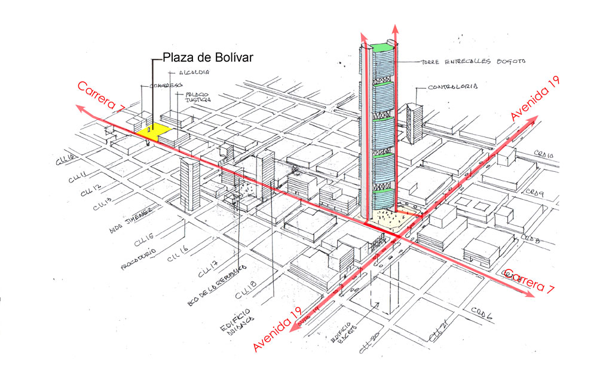
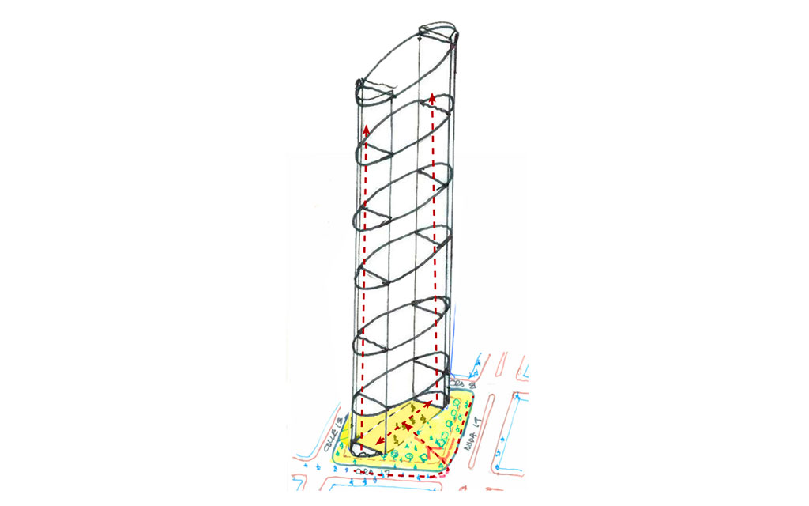
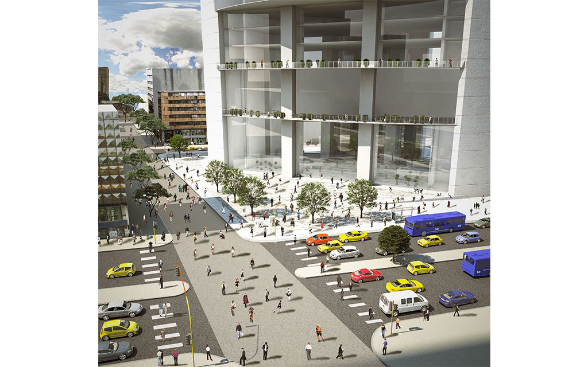
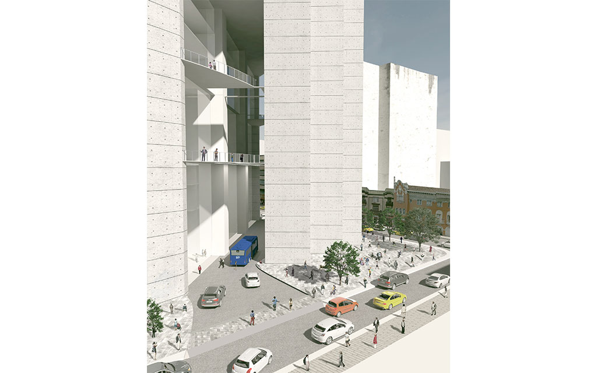

Uno de los 10 proyectos que le cambiará la cara al centro de Bogotá es el edificio Entre Calles, un rascacielos de 96 pisos que con 457 metros de altura sería el más imponente de Latinoamérica.
 Tras haber fracasado una serie de propuestas para ocupar el privilegiado lote de la calle 19 con carrera séptima, la constructora AMCO LTDA presentó en 2013 una licencia por 95 pisos de uso mixto en la curaduría urbana número 1. La iniciativa terminó por darle un giro al proyecto, el cual terminó en el rascacielos que promete ser insuperable, al menos en Colombia.
Por otro lado, el proyecto recibió el apoyo de Forza Internacional Group, una empresa australiana con casos de éxito en la construcción de torres en Asia y Medio Oriente.
 En su sitio oficial, la empresa inversionista llama al proyecto Entre Calles en Bogotá como el “nuevo ícono de las Américas”. Según Obras de Bogotá, el proyecto empezaría a construirse hacia finales del 2017.
Estos son los diseños del edificio Entre Calles, que son exhibidos en el sitio oficial de la constructora AMCO Ltda. Cabe aclarar que los bocetos están susceptibles de ser modificados.